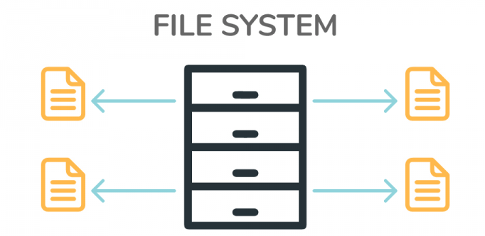
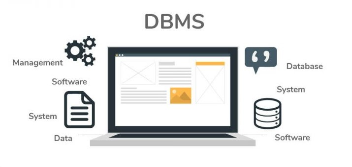

File System : The file system is basically a way of arranging the files in a storage medium like a hard disk. The file system organizes the files and helps in the retrieval of files when they are required. File systems consist of different files which are grouped into directories. The directories further contain other folders and files. The file system performs basic operations like management, file naming, giving access rules, etc.
Example:NTFS(New Technology File System), EXT(Extended File System).
DBMS(Database Management System) : Database Management System is basically software that manages the collection of related data. It is used for storing data and retrieving the data effectively when it is needed. It also provides proper security measures for protecting the data from unauthorized access. In Database Management System the data can be fetched by SQL queries and relational algebra. It also provides mechanisms for data recovery and data backup.
Example : Oracle, MySQL, MS SQL server.
